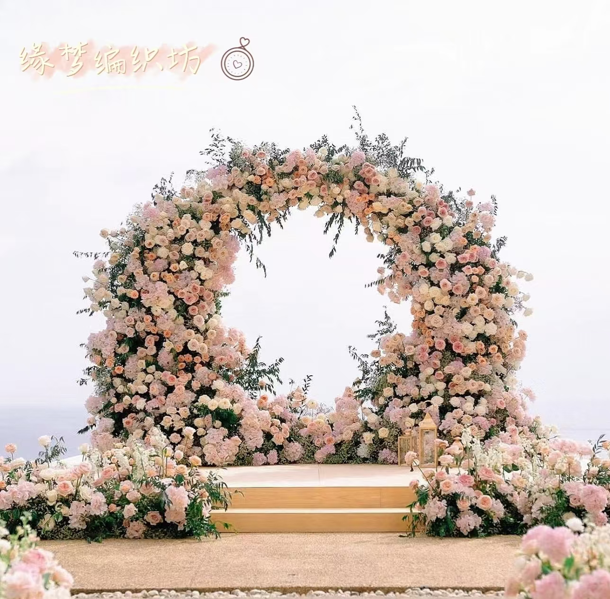
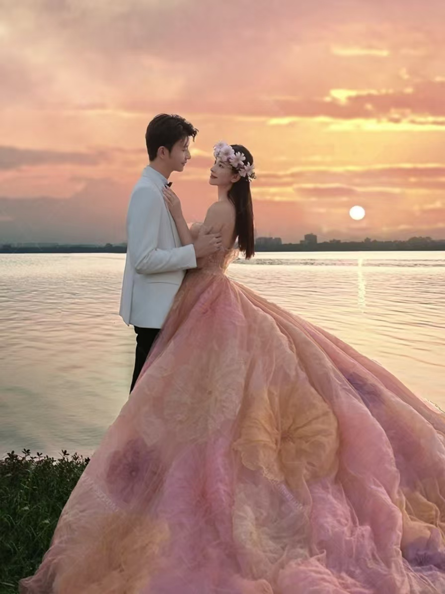
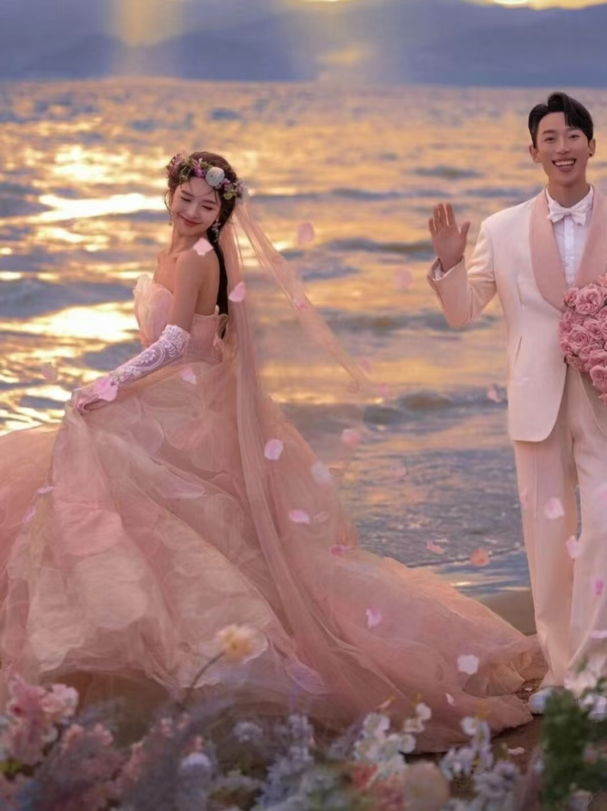

|  |
| 创立背景 随着时代的进步，现代未婚者对于婚礼的追求已不再局限于传统的场地与形式，人们对于婚礼的要求越来越高。未婚群体渴望拥有一场独特、浪漫且难忘的婚礼，以表达他们独特的爱情观和个性。婚礼作为人生中的重要里程碑，承载着无数年轻人的梦想与期待。然而，传统婚礼形式单一、缺乏创新，难以满足年轻一代对个性化、独特化婚礼体验的追求。当今科技的飞速发展和人们审美观念的不断升级，使创意婚礼市场应运而生，成为新时代婚礼行业的一股清流。本项目旨在通过创新技术和创意设计，为未婚者提供上天入海的梦幻婚礼体验，让他们的婚礼成为一生中最难忘的时刻。 |
 |
|  | 创立意义 缘梦编织坊——创意婚礼。本项目旨在打造一个婚庆一站式服务平台，为未婚者打造一场在天与海之间的梦幻婚礼。这不仅能够为消费者提供全方位的婚庆服务方案，而且能够帮助消费者实现他们梦想中的婚礼。创意婚礼蕴含着激情与创新理念，能够为未婚群体提供更加优质的婚礼服务，也能使每一对新人在人生最美好的时刻里留下最难忘的回忆。 |